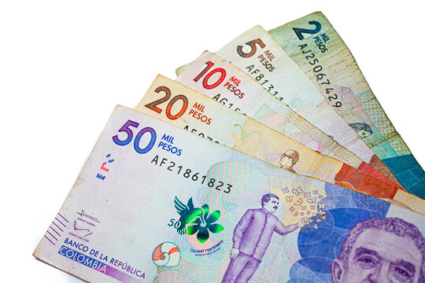

01
ORIGIN
During different periods of Colombian history, various currencies and monetary systems were used.
Over time, the peso became the currency used by the country.

Currency of Colombia
The Colombian peso is the official currency of Colombia and is used throughout the country.
Its international code is COP and its symbol is normally represented by the "$" sign or as "COL$" to distinguish it from other currencies that use the same symbol.
The Colombian peso is used to make purchases, pay for services, carry out transactions, and perform different economic activities throughout the country.
The currency is part of the daily life of Colombians and is an important element of the national economy.
Colombian Peso
COP
$
Colombia
The history of Colombian currency is related to the different political and economic changes that the country has experienced over time.
During different periods of Colombian history, various currencies and monetary systems were used.
Over time, the peso became the currency used by the country.
The Colombian monetary system has changed along with the country's economic development and needs.
Coins and banknotes have been modified at different times to improve their security and design.
Banco de la Republica plays a fundamental role in Colombia's monetary system.
This institution participates in the issuance of the banknotes and coins that officially circulate throughout the country.
Colombia currently uses different denominations of coins and banknotes for everyday economic activities.
Current designs incorporate elements related to Colombian history, culture, and biodiversity.
The Colombian peso is divided into different denominations that make purchases and transactions easier.
Banknotes contain different security features that help prevent counterfeiting.
Colombian currency designs represent important people, culture, history, and nature of the country.
Colombian banknotes represent different people and important elements of the country's history and culture.
The denominations in use include banknotes of different values that allow transactions involving different amounts.
Colombian coins are mainly used for lower-value payments.
Their designs include different symbols and elements related to Colombia's identity and biodiversity.
The Colombian peso is present in practically all economic activities in the country. It is used to buy food, pay for transportation, services, products, and different commercial activities.
It is also used by companies, educational institutions, businesses, and government entities to carry out their financial operations.
For this reason, the Colombian peso not only represents a unit of value, but is also part of everyday life and the economic identity of the country.